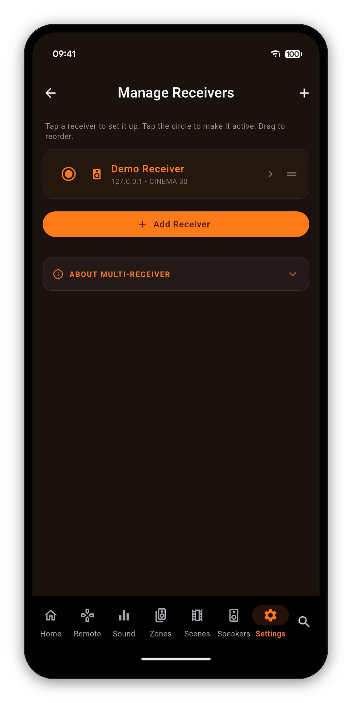
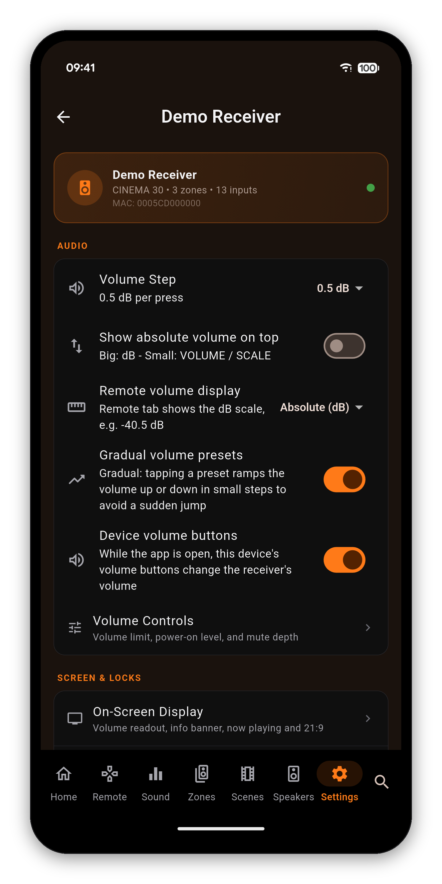
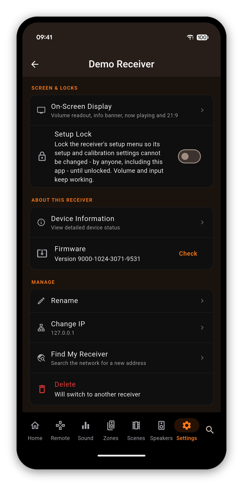

Add as many Denon and Marantz receivers as you have, switch between them in two taps, and give each one its own audio preferences. Every receiver has its own page for its name, address, locks and firmware.
Open Settings. The card at the very top is Manage Receivers: it shows how many receivers you have and which one is active. Tap it.
What you will see: the line "Tap a receiver to set it up. Tap the circle to make it active. Drag to reorder.", then your receivers, each with its name, IP address and model. The active receiver is highlighted and its circle is filled. Below the list are the Add Receiver button and, unless you are already in it, a DEMO MODE section.


Each receiver keeps its own data on your device, so switching loads that receiver's settings straight away.
Tap a receiver to open its page. The card at the top shows its connection state and details. If it is not the active receiver, a Make active button sits under the card, because the volume limits, display and locks can only be changed on the active receiver. If it is active but not reachable, the page says "The app is not connected to the receiver right now."


Your own preferences for this receiver. Each receiver keeps its own values. Volume guide →
Shown for the active receiver while connected.
Demo Mode runs a simulated Marantz CINEMA 30 inside the app. Every screen works as it does with real hardware, and nothing is sent over your network.
Getting started · Navigating the app · Search · Home Screen · Volume Controls · Remote · Zones · Now Playing & HEOS · Radio (FM/AM) · Scenes · Sound · Graphic EQ · Speakers · Why a control is locked · Settings · Widgets · Custom Icons · On-Screen Display · Languages · The Assistant · Home Automation · Home Assistant dashboard · Backup & Restore · Glossary